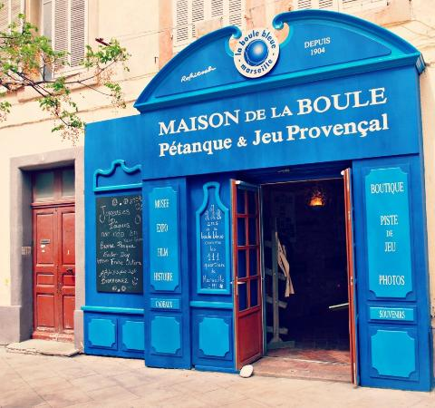

- /li>
- 
Les nombreux musées de Marseille proposent des expositions permanentes ou temporaires autour de thèmes variés : Histoire de Marseille, mode, Antiquité, Histoire Naturelle ou encore art contemporain. Installés dans des édifices patrimoniaux du XVIIe siècle ou d’architecture récente, les musées de Marseille sont répartis dans plusieurs quartiers.
| HORRAIRES | |
|---|---|
| lundi | FERMEE |
| mardi | 10H-18H |
| mercredi | 10H-18H |
| jeudi | 10H-18H |
| vendredi | 10H-18H |
| samedi | 10H-18H |
| dimanche | 10H-18H |
LE MUCEM :
Le Musée des Civilisations de l'Europe et de la Méditerranée est un musée national situé à Marseille.
Il a été inauguré par le président François Hollande, le 7 juin 2013, alors que Marseille était capitale européenne de la culture.
Les expositions permanentes s'appuient sur différents champs scientifiques : anthropologie, archéologie, histoire, histoire de l'art et art contemporain.
Le musée propose également des expositions temporaires souvent en lien avec l'actualité artistique ou sociétale.
Le musée a pour vocation de rendre compte des permanences historiques et sociales de ce bassin de civilisation,
ainsi que des tensions qui le traversent jusqu'à l’époque contemporaine.
| HORRAIRES | |
|---|---|
| lundi | FERMEE |
| mardi | 10H-18H |
| mercredi | 10H-18H |
| jeudi | 10H-18H |
| vendredi | 10H-18H |
| samedi | 10H-18H |
| dimanche | 10H-18H |
MUSEE HISTOIRE DE MARSEILLE
Le musée d'histoire de Marseille est un musée consacré à l'histoire de la ville de Marseille.
Fondé en 1983, il a été entièrement rénové et a rouvert le 14 septembre 2013 à l'occasion de Marseille-Provence 2013.
Installé dans le Centre Bourse, à proximité du Vieux-Port, le musée d'histoire de Marseille abrite le site du Port antique,
une exposition permanente de 3 500 m2, un espace d'exposition temporaire, un centre de documentation et un auditorium2,
ce qui en fait le plus important musée d'histoire urbaine en France.
| HORRAIRES | |
|---|---|
| lundi | FERMEE |
| mardi | 9H-18H |
| mercredi | 9H-18H |
| jeudi | 9H-18H |
| vendredi | 9H-18H |
| samedi | 9H-18H |
| dimanche | 9H-18H |
VIEILLE CHARITE
Lieu emblématique de Marseille, la Vieille Charité est nichée au cœur du Panier, le noyau historique de la ville.
Merveille de l’architecture du XVIIe siècle, La Vieille Charité symbolise à la fois la richesse du patrimoine marseillais
et offre à la ville un haut lieu culturel. Restaurée, la Vieille Charité est devenue, depuis 1986, un centre pluridisciplinaire
à vocation scientifique et culturelle de la Ville de Marseille. Elle est classée au titre des Monuments Historiques.
| HORRAIRES | |
|---|---|
| lundi | FERMEE |
| mardi | 9H-18H |
| mercredi | 9H-18H |
| jeudi | 9H-18H |
| vendredi | 9H-18H |
| samedi | 9H-18H |
| dimanche | 9H-18H |
MUSEE CANTINI
Jules Cantini, amateur d'art et important marbrier a fait don de cet hôtel particulier construit en 1694 à la ville de Marseille en 1916 afin qu’il devienne un musée consacré à l’art moderne.
Ce prestigieux établissement culturel marseillais développe depuis une intense politique d'acquisitions et d'expositions, en collaboration avec les plus importantes institutions muséales nationales et internationales. Le musée présente un large panorama de l'art moderne,
mettant l'accent sur un certain nombre de séquences historiques telles que le post-impressionnisme, le fauvisme, le cubisme ainsi que les différentes tendances post-cubistes des années 1920-1930
| HORRAIRES | |
|---|---|
| lundi | FERMEE |
| mardi | FERMEE |
| mercredi | FERMEE |
| jeudi | FERMEE |
| vendredi | FERMEE |
| samedi | FERMEE |
| dimanche | FERMEE |
Le musée d'Art contemporain de Marseille, également appelé « MAC », est le musée de la ville consacré à l'art contemporain
avec des collections d'œuvres des années 1960 à nos jours.
Le Musée d’Art Contemporain [MAC] de Marseille s’est doté au fil du temps d’une collection d’œuvres contemporaines riche et variée.
Sa collection est présentée dans plusieurs salles et offre un large panorama de l’art contemporain.
| HORRAIRES | |
|---|---|
| lundi | FERMEE |
| mardi | 10H-17H |
| mercredi | 10H-17H |
| jeudi | 10H-17H |
| vendredi | 10H-17H |
| samedi | 10H-17H |
| dimanche | 10H-17H |
LA FRICHE
Un espace inédit d'art contemporain international et prospectif
le Panorama est un projet labellisé Marseille-Provence Capitale Européenne de la Culture et en activité dès 2013.
Son architecture, signée Mathieu Poitevin, entremêle de larges plateaux de diffusion réversibles et modulables
qui favorisent la conception de formes d'expositions de grandes amplitudes, à des formats intermédiaires propices aux partenariats et aux invitations.
Un nouvel espace où l'accessibilité au toit terrasse.
| HORRAIRES | |
|---|---|
| lundi | FERMEE |
| mardi | 10H-18H |
| mercredi | 10H-18H |
| jeudi | 10H-18H |
| vendredi | 10H-18H |
| samedi | 10H-18H |
| dimanche | 10H-18H |
SAVONNERIE DE LA LICORNE
Idealement situe sur les quais du vieux port,
le musee du savon de marseille signé de la savonnerie de la
licorne vous accueille au coeur d'un site historique a l'interieur de l'ancien
arsenal des galeres construit par Louis XIV.
| HORRAIRES | |
|---|---|
| lundi | FERMEE |
| mardi | FERMEE |
| mercredi | 10H-18H |
| jeudi | 10H-18H |
| vendredi | 10H-18H |
| samedi | 10H-18H |
| dimanche | 10H-18H |
LA MAISON DE LA PETANQUE
La Maison de la Boule vous attend, dans une ambiance conviviale pour partager un moment bouliste
autour de la mini piste ou pour enrichir vos connaissances boulomanes.